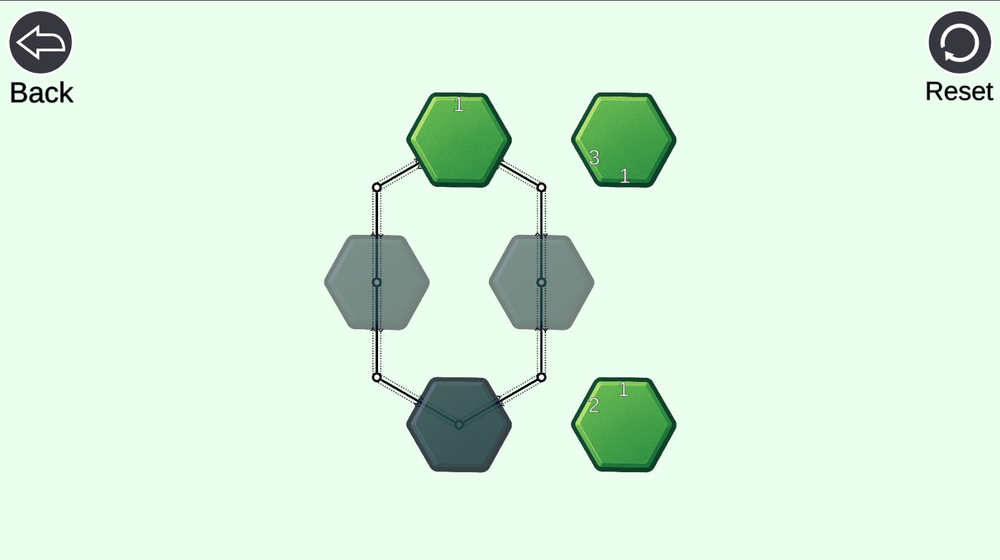
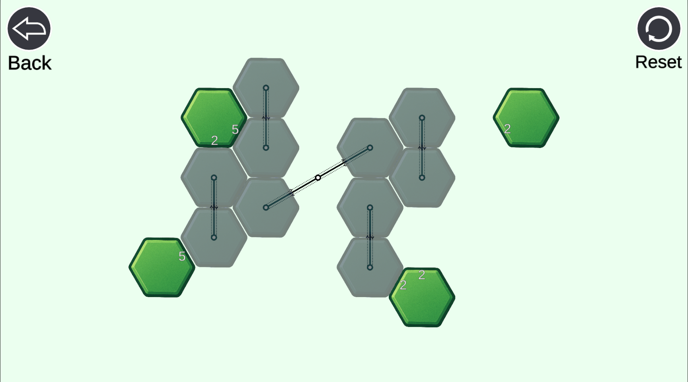
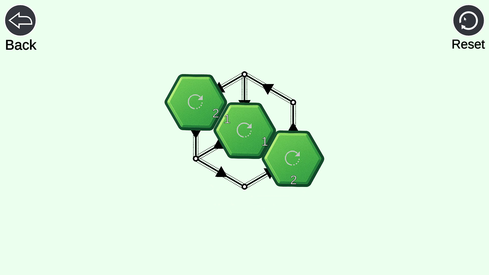
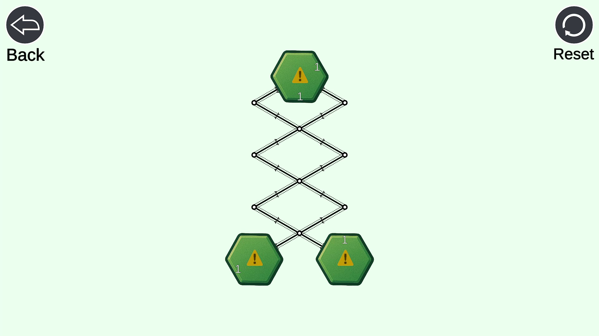
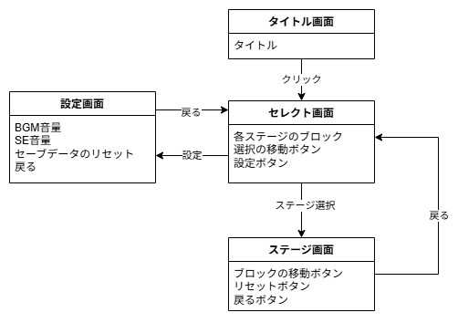
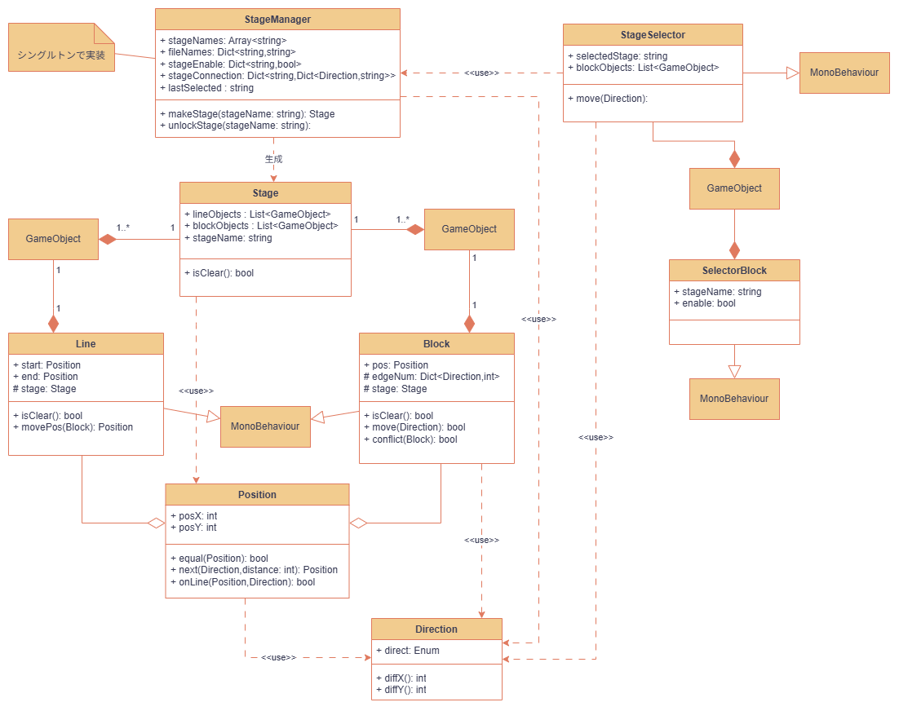
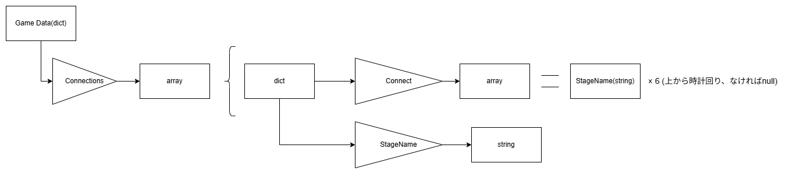
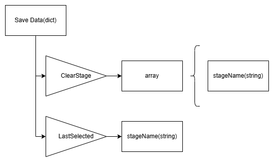
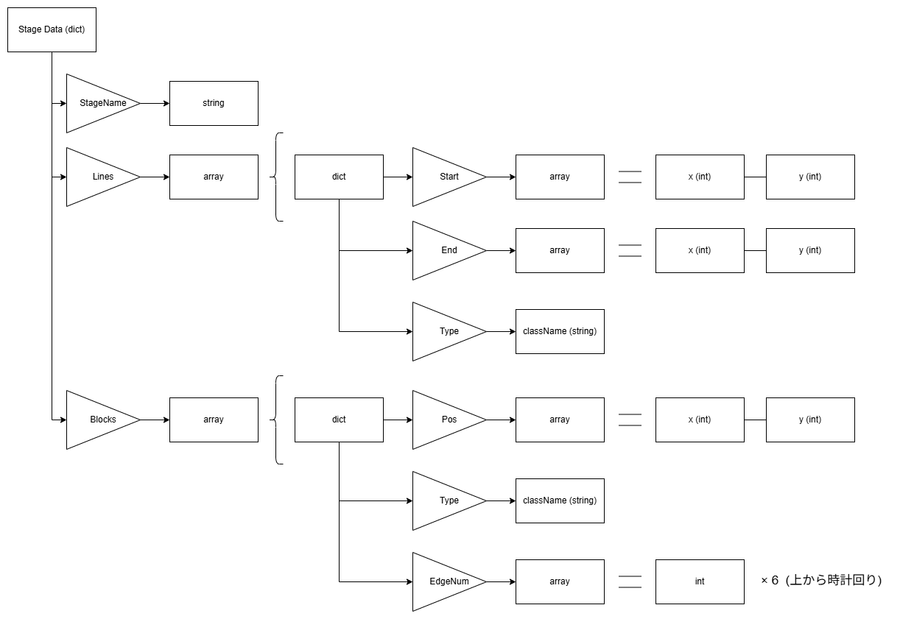

SlideHexagon
作品紹介
初めてSteamにリリースした作品です。
シンプルなパズルゲームで、六角形をスライドし、ルールに沿って整列させることでパズルを解きます。
ステージは28個、特殊ギミックは4種類用意しています。
 特殊ギミック1 回転
動かすことで数字が回転するため、先を読みながら移動する必要があります。
特殊ギミック2 重なり
他の六角形に重ねることができますが、数のカウントは増えます。
他の六角形をすり抜けて移動ができるなど、特殊な挙動をすることで、パズルの単調さを減らす役割を持ちます。
特殊ギミック3 削除
動かすことで移動する線が削除されるため、移動する順序を慎重に考える必要があります。
特殊ギミック4 一方通行
移動する線を一方通行にします。こちらも、移動する順序を考えさせる役割があります。

シンプルなルールでありながら、特殊ギミックの追加やステージ構成の工夫を行い、考えて解く楽しさを演出しています。
また、Steamの実績機能を使用することで、コンプリートを分かりやすく伝え、達成感を与えることができます。
設計
画面構成
UMLクラス図
ゲームデータの形式


工夫点・技術的特徴
各ステージのデータはJSONファイルとして構造化して作成しています。パズルゲームということもあり、ステージデータの作成にかなり時間がかかりました。
Steamworksの開発者登録や、販促画像・動画の作成、様々な説明文を英文和文ともに用意するなど、Steamに配信するための作業も大変でした。
Steamでは現在2025/10/28の時点で、219人のユーザにプレイされました。
また、Steam上でレビューを頂き、いくつかのアップデートを加えることもしました。